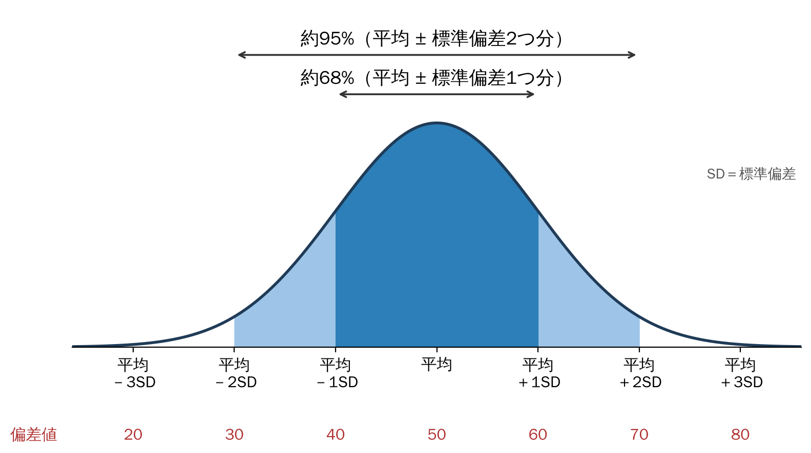
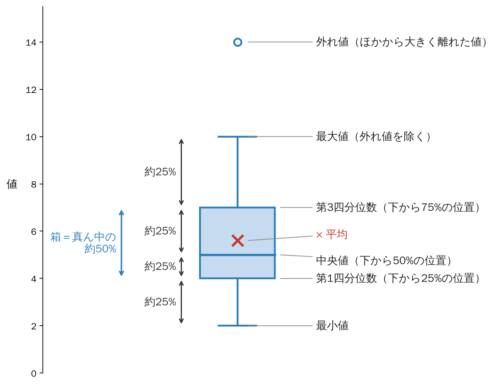
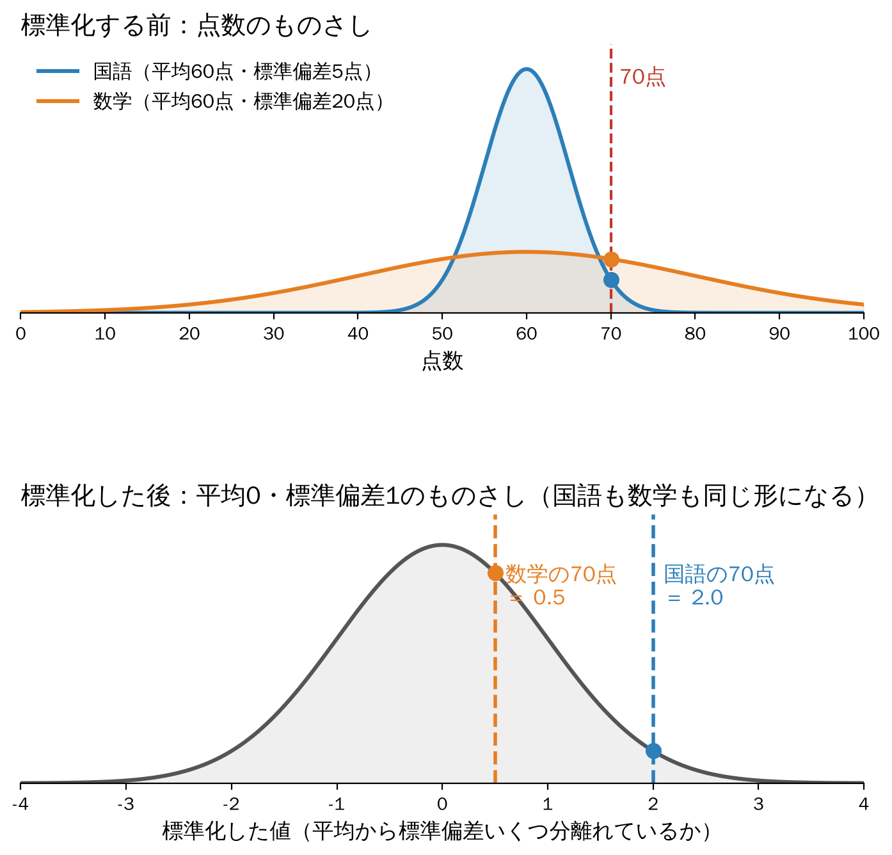

6 ばらつき
平均だけでは分からないこと
平均が同じなら、2つのグループの中身も同じと言えるのでしょうか？
前回は、ピボットテーブルを使って、学年ごとの睡眠時間やスマホ時間の平均を比べました。平均は便利ですが、平均だけを見ていると、見落としてしまうことがあります。
まず、次の2つのクラスのテストの点数を見てください（架空の例です）。
| クラス | 5人の点数 | 平均 |
|---|---|---|
| A組 | 58、59、60、61、62 | 60点 |
| B組 | 20、40、60、80、100 | 60点 |
平均はどちらも60点です。では、A組とB組は「同じようなクラス」と言ってよいでしょうか？
A組は全員が60点のまわりに集まっていますが、B組は20点の人も100点の人もいます。平均は同じでも、点数の散らばり方（ばらつき）がまったく違います。たとえば補習を考えるなら、A組では必要な人がほとんどいませんが、B組では必要な人がいます。
今日は、データの「真ん中」と「散らばり方」を、Excelで数字とグラフにして確かめます。
6.1 真ん中を表す：平均と中央値
6.1.1 代表値を求める関数
データ全体を1つの数字で表したものを代表値と呼びます。よく使うのは、平均と中央値です。最大値・最小値と一緒に、次の関数で求められます。
| 関数 | 意味 | 例 |
|---|---|---|
=AVERAGE(範囲) |
平均（合計 ÷ 人数） | =AVERAGE(データ!C2:C101) |
=MEDIAN(範囲) |
中央値（小さい順に並べたときの真ん中の値） | =MEDIAN(データ!C2:C101) |
=MAX(範囲) |
最大値 | =MAX(データ!C2:C101) |
=MIN(範囲) |
最小値 | =MIN(データ!C2:C101) |
=COUNT(範囲) |
数値が入っているセルの数（人数） | =COUNT(データ!C2:C101) |
人数が偶数のときは、真ん中の2人の値の平均が中央値になります。空のセルは、どの関数でも計算に入りません。
6.1.2 平均と中央値がずれるとき
平均と中央値は、いつも同じになるわけではありません。たとえば、日本の1世帯あたりの所得（2024年）は、次のようになっています (厚生労働省 2026)。
| 金額 | |
|---|---|
| 平均 | 575.2万円 |
| 中央値 | 451万円 |
平均の方が、120万円以上も高くなっています。これは、ごく一部の、とても所得の高い世帯が、平均を大きく引き上げているからです。所得を低い順に並べると、平均（575.2万円）より少ない世帯の方が多くなります。
極端に大きい値（または小さい値）があると、平均はそちらに引っぱられますが、中央値はあまり動きません。平均と中央値が大きくずれていたら、極端な値がないか確かめましょう。「ふつうの人」の感覚に近いのは、多くの場合、中央値です。
6.2 散らばりを数字で表す：標準偏差
6.2.1 範囲（最大 − 最小）
いちばん簡単なばらつきの表し方は、範囲（最大値 − 最小値）です。A組は 62 − 58 = 4点、B組は 100 − 20 = 80点です。ただし、範囲は両端の2人だけで決まってしまうので、1人だけ極端な人がいると、大きく変わります。
6.2.2 標準偏差とは
そこで、全員の値を使ってばらつきを表すのが、標準偏差です。標準偏差は、ざっくり言うと、一人ひとりが平均から「平均的にどれくらい離れているか」を表す数字です。
計算の手順は次のとおりです（Excelが自動で計算してくれるので、仕組みだけ分かれば十分です）。
- 一人ひとりの値から平均を引きます（偏差）。
- 偏差をそのまま足すと、プラスとマイナスが打ち消し合って、必ず 0 になってしまいます。そこで、2乗してマイナスを消します。
- 2乗した値の平均をとります（分散）。
- 2乗したので、ルート（√）をとって元の単位に戻します。これが標準偏差です。
\[ \text{標準偏差} = \sqrt{\frac{(\text{値}_1 - \text{平均})^2 + (\text{値}_2 - \text{平均})^2 + \cdots}{\text{人数}}} \]
A組とB組で、実際に計算してみましょう。どちらも平均は60点です。
A組
| 点数 | ① 偏差（点数 − 60） | ② 偏差の2乗 | |
|---|---|---|---|
| 1人目 | 58 | −2 | 4 |
| 2人目 | 59 | −1 | 1 |
| 3人目 | 60 | 0 | 0 |
| 4人目 | 61 | 1 | 1 |
| 5人目 | 62 | 2 | 4 |
| 合計 | 300 | 0 | 10 |
- ③ 分散 ＝ 10 ÷ 5人 ＝ 2
- ④ 標準偏差 ＝ √2 ＝ 約1.4点
B組
| 点数 | ① 偏差（点数 − 60） | ② 偏差の2乗 | |
|---|---|---|---|
| 1人目 | 20 | −40 | 1600 |
| 2人目 | 40 | −20 | 400 |
| 3人目 | 60 | 0 | 0 |
| 4人目 | 80 | 20 | 400 |
| 5人目 | 100 | 40 | 1600 |
| 合計 | 300 | 0 | 4000 |
- ③ 分散 ＝ 4000 ÷ 5人 ＝ 800
- ④ 標準偏差 ＝ √800 ＝ 約28.3点
どちらの組も、①の偏差を足すと 0 になります。②で2乗してから足すと、A組は10、B組は4000と、散らばりの違いがはっきり表れます。平均が同じでも、標準偏差を見れば、B組の方がずっと散らばっていることが数字で分かります。
標準偏差1つ分・2つ分の範囲
テストの点数や身長のように、平均のあたりにいちばん多くの人が集まり、平均から離れるほど少なくなる「山型」のデータでは、標準偏差を使って、どのくらいの人がどの範囲に入るかの目安が分かります（図 6.1）。
- 平均 ± 標準偏差1つ分の間に、全体の約68%（およそ3分の2）が入ります。
- 平均 ± 標準偏差2つ分の間に、全体の約95%が入ります。

たとえば、平均60点、標準偏差10点のテストなら、50〜70点の間に約68%、40〜80点の間に約95%の人がいることになります。逆に言えば、平均から標準偏差2つ分以上離れた人は、全体の約5%しかいない「珍しい」値です。
この「約68%・約95%」は、データが左右対称の山型のときの目安です。年収のように、一部に極端に大きい値があって片側に長く伸びたデータでは、当てはまりません。まず、ヒストグラムや箱ひげ図で形を確かめましょう。
6.2.3 Excelで標準偏差を求める
=STDEV.P(範囲)Excelには、標準偏差の関数が2つあります。この授業では、手元のデータそのもののばらつきを表す STDEV.P を使います。STDEV.S は、一部のデータ（標本）から全体のばらつきを推測するときに使うもので、人数で割る代わりに「人数 − 1」で割るため、少しだけ大きな値になります。
6.2.4 このクラスのデータで見ると
このクラス（53人）のデータで計算すると、次のようになります。
| 変数 | 平均 | 中央値 | 最小 | 最大 | 標準偏差 |
|---|---|---|---|---|---|
| 通学時間（分） | 55.3 | 60 | 20 | 100 | 19.7 |
| 睡眠時間（時間） | 6.65 | 7 | 3 | 10 | 1.10 |
| スマホ時間（時間） | 6.53 | 6.15 | 1 | 10 | 2.23 |
標準偏差は、元のデータと同じ単位を持ちます。通学時間の19.7は「分」、睡眠時間の1.10は「時間」です。単位の違う変数どうしの標準偏差を、そのまま比べることはできません。同じ変数を、グループどうし（1年と2年など）で比べるときに使いましょう。
6.3 散らばりを図で見る：箱ひげ図
6.3.1 箱ひげ図の読み方
ばらつきを図で見るには、箱ひげ図が便利です。データを小さい順に並べて4等分し、その区切りを箱とひげで表します。

| 部分 | 意味 |
|---|---|
| 箱の下の線 | 下から25%の位置（第1四分位数） |
| 箱の中の線 | 真ん中（中央値） |
| 箱の上の線 | 下から75%の位置（第3四分位数） |
| 箱の中の × | 平均 |
| ひげ | 最小値と最大値（外れ値を除く） |
| ひげの外の点 | 外れ値（ほかの人から大きく離れた値） |
図 6.2 のように、最小値・第1四分位数・中央値・第3四分位数・最大値の5つの区切りの間には、それぞれ約25%ずつのデータが入ります。箱の中に、真ん中の半分の人が入っています。箱やひげが長いほど、その部分のデータが散らばっているということです。
6.3.2 Excelで箱ひげ図を作る
- グラフにしたい列を、見出しも含めて選びます。学年ごとに分けたいときは、「学年」の列と、値の列（スマホ時間など）の2列を選びます（離れた列は
Ctrlを押しながら選びます）。 - 「挿入」タブ →「統計グラフの挿入」→「箱ひげ図」をクリックします。
- 学年の列も選んだ場合は、1年と2年の箱が横に並びます。
学年の列を選んでいないか、学年の列が左側にない可能性があります。シート「データ」から「学年」と「スマホ時間」の2列を別の場所にコピーして、学年を左に並べてから選ぶと確実です。
6.4 散らばりの中での位置：標準化と偏差値
平均と標準偏差が分かると、ある人が、全体の中でどのあたりにいるかを表せます。
6.4.1 標準化（基準化）
自分の値が、平均から標準偏差いくつ分離れているかを表した数字を、標準化した値（基準化した値、z値とも言います）と呼びます。
\[ \text{標準化した値} = \frac{\text{自分の値} - \text{平均}}{\text{標準偏差}} \]
- ちょうど平均の人は 0、平均より標準偏差1つ分高い人は 1、1つ分低い人は −1 です。
- 標準化すると、どんなデータも平均0、標準偏差1にそろいます。
たとえば、平均60点のテストで70点を取ったとします。
| テスト | 平均 | 標準偏差 | 70点を標準化した値 |
|---|---|---|---|
| 国語 | 60点 | 5点 | (70 − 60) ÷ 5 = 2.0 |
| 数学 | 60点 | 20点 | (70 − 60) ÷ 20 = 0.5 |

図 6.3 の上の図は、標準化する前の2つのテストの点数の分布です。どちらも平均は60点ですが、国語は平均のまわりに細く集まり、数学は横に広く散らばっています。70点の線は同じ位置にあっても、国語ではその右側（70点より上）にいる人がほとんどいないのに対し、数学ではまだたくさんいます。
下の図は、標準化した後です。各テストの点数から平均を引いて標準偏差で割ると、国語も数学も、平均0・標準偏差1の同じ形の分布にそろいます。同じものさしの上に並べると、国語の70点（2.0）が数学の70点（0.5）よりずっと右、つまり上位にあることがひと目で分かります。
同じ70点でも、国語では平均より標準偏差2つ分も上（図 6.1 の右端の方）ですが、数学では0.5つ分しか上ではありません。みんなの点数が平均のまわりに集まっている国語の方が、70点の「すごさ」は大きいのです。
標準化した値には単位がありません。そのため、単位や満点が違うもの（点数と時間、国語と数学など）でも、同じものさしで比べられます。
6.4.2 偏差値
受験でおなじみの偏差値は、標準化した値を、平均50、標準偏差10になるように直したものです。
\[ \text{偏差値} = 50 + 10 \times \text{標準化した値} \]
| テスト | 70点を標準化した値 | 偏差値 |
|---|---|---|
| 国語 | 2.0 | 50 + 10 × 2.0 = 70 |
| 数学 | 0.5 | 50 + 10 × 0.5 = 55 |
- ちょうど平均の人は、偏差値50です。
- 標準偏差1つ分高い人は偏差値60、2つ分なら70です。山型のデータなら、偏差値60以上は上位約16%、70以上は上位約2.5%にあたります（図 6.1）。
偏差値は、点数そのものではなく、ばらつきの中での位置を表しているのです。
6.4.3 Excelで標準化と偏差値を求める
平均がセルB55、標準偏差がセルB56にあるとき、B2の人の標準化した値（C2）と偏差値（D2）は、次の式で求められます。平均と標準偏差のセルには、$ を付けて固定します。
C2：=(B2-$B$55)/$B$56
D2：=50+10*C2標準化には、=STANDARDIZE(B2,$B$55,$B$56) という関数も使えます。
このクラスのクイズ（4問）では、平均2.08問、標準偏差0.84問なので、4問全部正解した人の標準化した値は約2.28、偏差値は約72.8です。3問の人は、約1.10、約61.0になります。
#DIV/0!が出る → 標準偏差のセルを参照していない（空のセルで割っている）可能性があります。$ が付いているか確かめます。- 偏差値が全員同じ値になる → 自分の値（B2）にまで $ を付けていないか確かめます。
- 「統計グラフ」が見つからない → 「挿入」タブの「おすすめグラフ」→「すべてのグラフ」タブ →「箱ひげ図」からも選べます。
- 平均の小数が長すぎる → 「ホーム」タブの「小数点以下の表示桁数を減らす」ボタンで調整します。
6.5 課題_6に取り組もう
Excelファイル「課題_6」を使って作業します。作業したファイルが、そのまま今日の課題の提出物になります。
- Blackboardから 課題_6.xlsx をダウンロードして開きます。
- 最初のシート「はじめに」に、学籍番号と氏名を入力します。
- シートを順番に進めます。黄色のセルに、式や答えを入力します。
- 最後に、ファイル名を 課題_6_氏名.xlsx に変えて保存し、Blackboardに提出します。
| シート | 内容 |
|---|---|
| はじめに | 学籍番号・氏名の入力、進め方の説明 |
| データ | クラスのアンケート結果（「練習」で使う） |
| 年収データ | 2つの市（みなみ市・きた市）の世帯年収（架空のデータ） |
| テストデータ | 40人の国語・数学のテストの点数（架空のデータ） |
| 練習 | 講義の説明に合わせて、A組・B組とクラスのデータで、代表値・標準偏差・箱ひげ図・標準化と偏差値を求める |
| 1_代表値 | 2つの市の平均・中央値・最大・最小。平均が同じなら、暮らしも同じ？ |
| 2_標準偏差 | 2つの市の範囲と標準偏差を比べ、違いを説明する |
| 3_箱ひげ図 | 2つの市の箱ひげ図を作り、箱・外れ値・平均の位置を読み取る |
| 4_偏差値 | 国語75点と数学80点、Aさんがよくできたのはどちら？（標準化と偏差値） |
| 5_発展 | 年収1億円の世帯が1つ加わったら？／自分で問いを立てて調べる |
| 6_振り返り | 平均だけで比べると見落とすこと、平均と中央値の使い分け |
- 練習：A組・B組の標準偏差は1.4点と28.3点です。クイズ4問正解の標準化した値は2.28・偏差値は72.8、3問は1.10・61.0です。
- 1_代表値：平均はどちらも560万円ですが、中央値はみなみ市440万円、きた市570万円です。みなみ市には年収1000万円以上の世帯が5世帯（最大2300万円）あり、平均を引き上げています。「平均が同じだから暮らしも同じ」とは言えません。
- 2_標準偏差：標準偏差は、みなみ市が約416万円、きた市が約96万円で、みなみ市の方が4倍以上散らばっています。
- 3_箱ひげ図：みなみ市の箱はきた市より下にあって長く、上の方に外れ値が5つあります。みなみ市では、×（平均）が箱の中の線（中央値）より上にあります。
- 4_偏差値：国語は平均62.4点・標準偏差7.3点、数学は平均55.7点・標準偏差15.9点です。Aさんの標準化した値は国語1.73、数学1.53、偏差値は国語67.3、数学65.3で、点数の低い国語の方が、偏差値は高くなります。偏差値60以上は、国語6人、数学8人です。
- 5_発展：1億円の世帯が加わると、平均は560万円から約790万円に、標準偏差は約416万円から約1513万円に大きくなりますが、中央値は440万円のままです。
6.6 振り返り
- 平均が同じでも、中身（ばらつき）が同じとは限らない。
- 極端な値があると、平均は引っぱられるが、中央値はあまり動かない。両方を見る。
- 標準偏差（
STDEV.P）は、平均からの平均的な離れ具合。箱ひげ図で、散らばりを図で比べられる。 - 標準化した値は、平均から標準偏差いくつ分離れているか。偏差値は、それを平均50・標準偏差10に直したもの。どちらも、ばらつきの中での位置を表す。